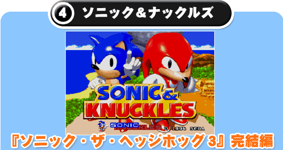
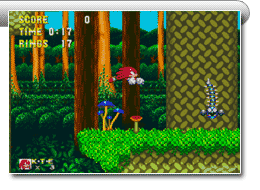
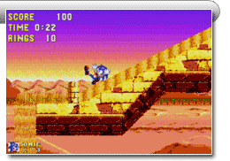

『ソニック・ザ・ヘッジホッグ３』の続編にあたる作品で、最初のゾーンが『ソニック・ザ・ヘッジホッグ３』の最終ゾーンの続きにあたります。 主人公としてナックルズもプレイが可能になり、壁をのぼったり空中を滑空したりと、ソニックやテイルスとは違うアクションが楽しめます。
1994年に発売されたメガドライブ版「ソニック＆ナックルズ」は、カートリッジにカートリッジを差し込む“ロックオンシステム”が搭載され、当時の話題となりました。単独で遊べるだけでなく、「ソニック・ザ・ヘッジホッグ３」と組み合わせることで、「ソニック３」の物語が完結するという仕掛けになっているのです！しかも「ソニック・ザ・ヘッジホッグ」「ソニック・ザ・ヘッジホッグ２」と組み合わせるとそれぞれ今までと違うゲームが遊べるという嬉しいおまけもありました！

色々な場所に生えているキノコは、乗ると高くジャンプできます。キノコを使えば高い位置にある足場に移動することも、高い場所に隠れているリングを見つける
こともできます。
ソニックとナックルズでは、スタートする場所も変わり
ます。 2 人のコースは途中で合流しますが、早速
ナックルズでプレイをして滑空などのアクションを
試してみましょう。

このステージでは大量の砂が川や滝のように流れて、行く手をはばみます。広いステージには様々な仕掛けがあり、うまく仕掛けをつかうとゴールまでの道のりもぐっと近くなります。
ダメージを受けることもありますが、大量の砂が流れ
落ちているところでは下のルートに行けることも
あるので、思い切って飛び込んでみましょう。
「ソニック＆ナックルズ」では、これら２つのゾーンをあわせ、全部で７つのステージを楽しむことができます。 そして、スペシャルステージですべてのカオスエメラルドを集めると、ソニックだけが進むことができる“ザ ドゥームズディ ゾーン”で、真のエンディングが待っています。リングを集め、スーパーソニックになって、大迫力の闘いに挑戦！